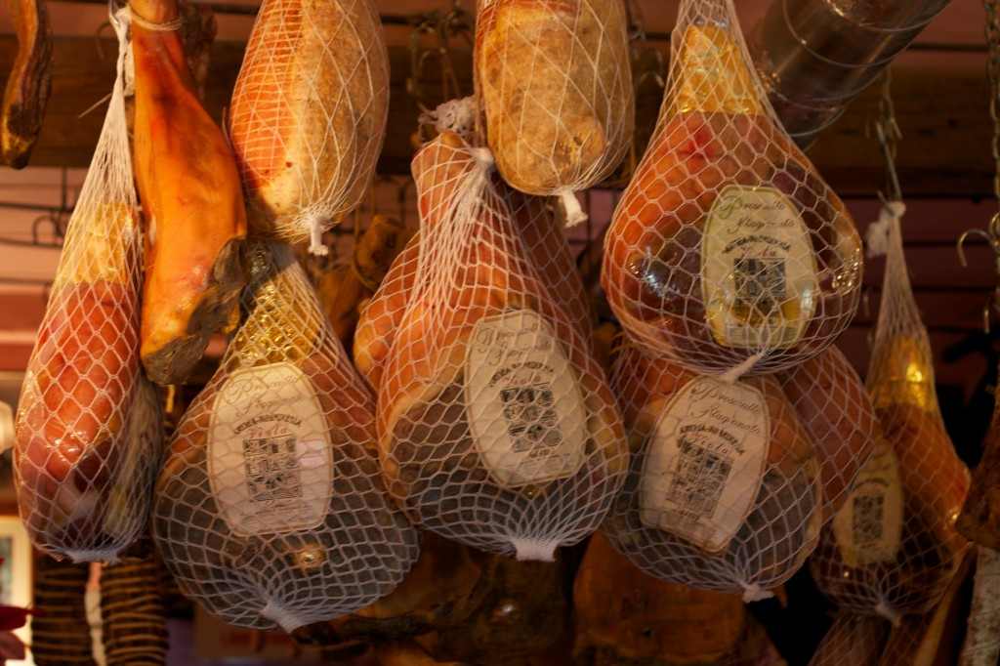
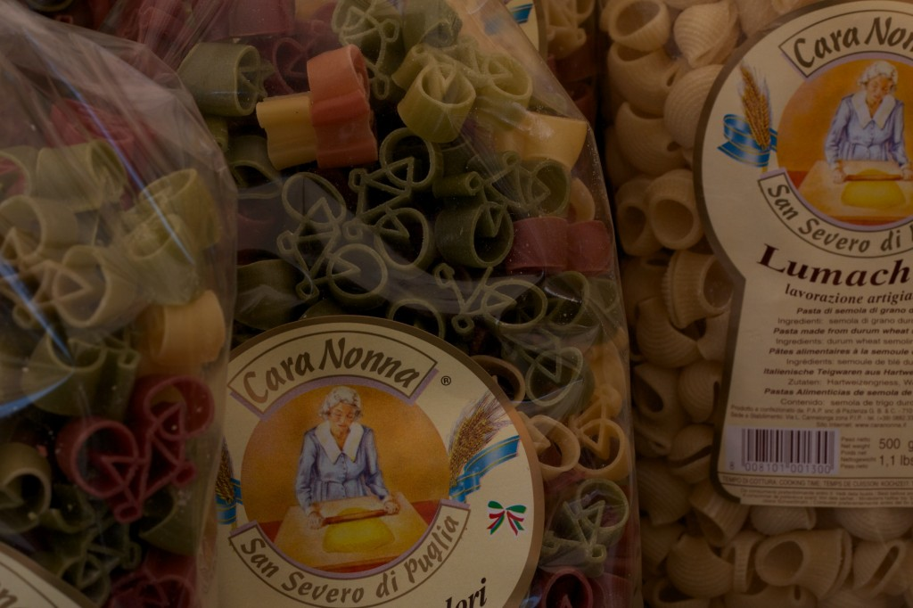
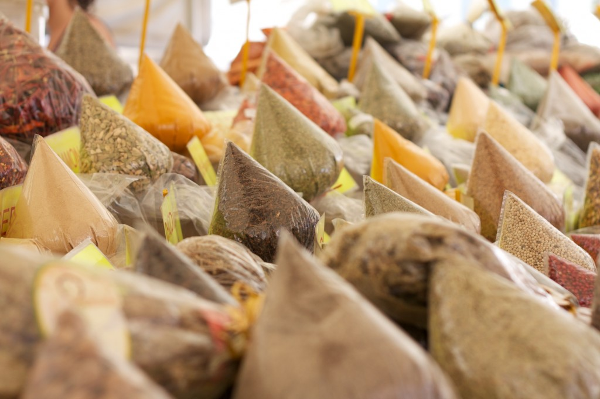
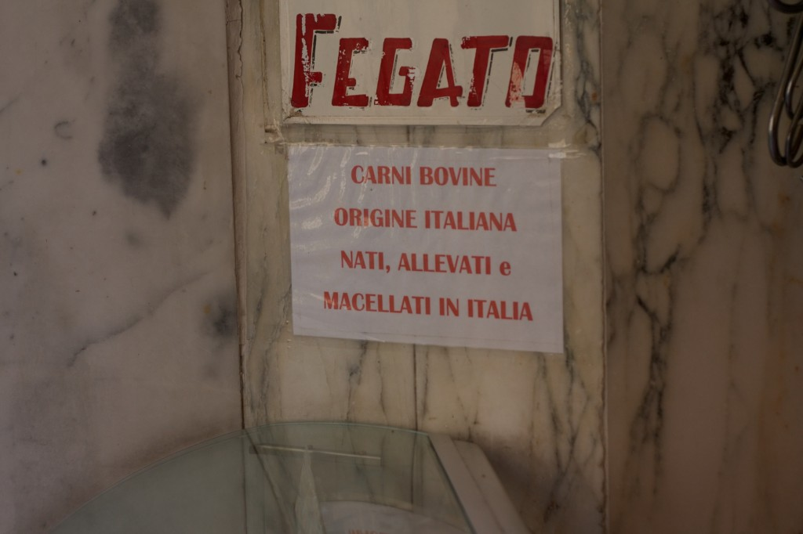
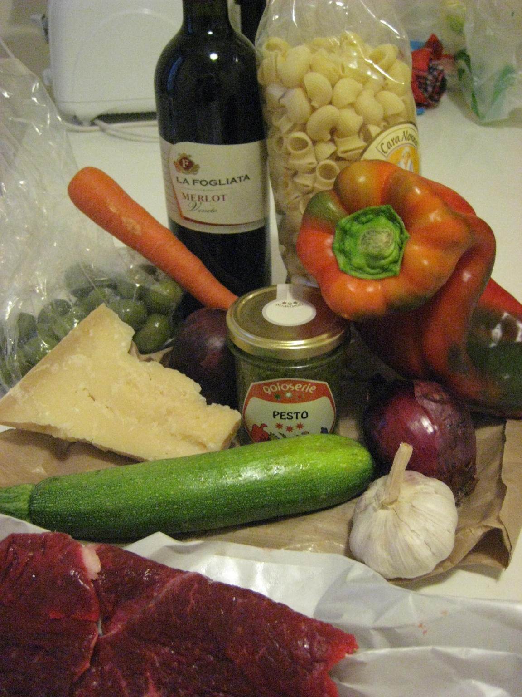
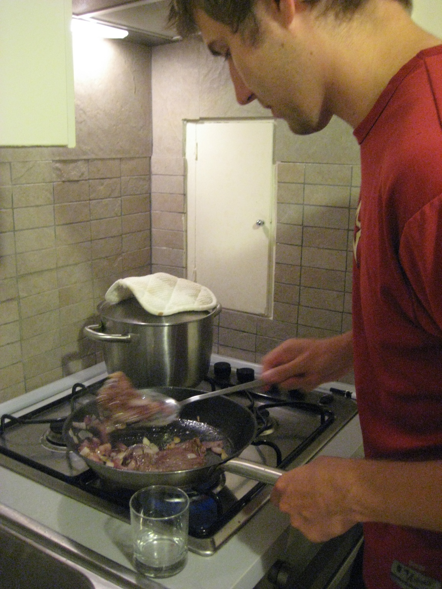
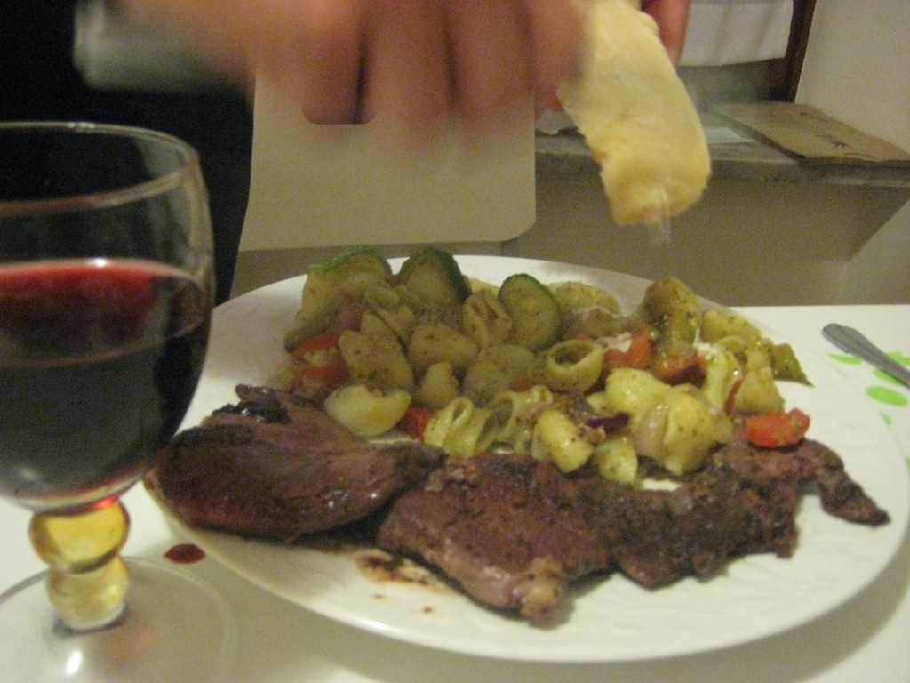
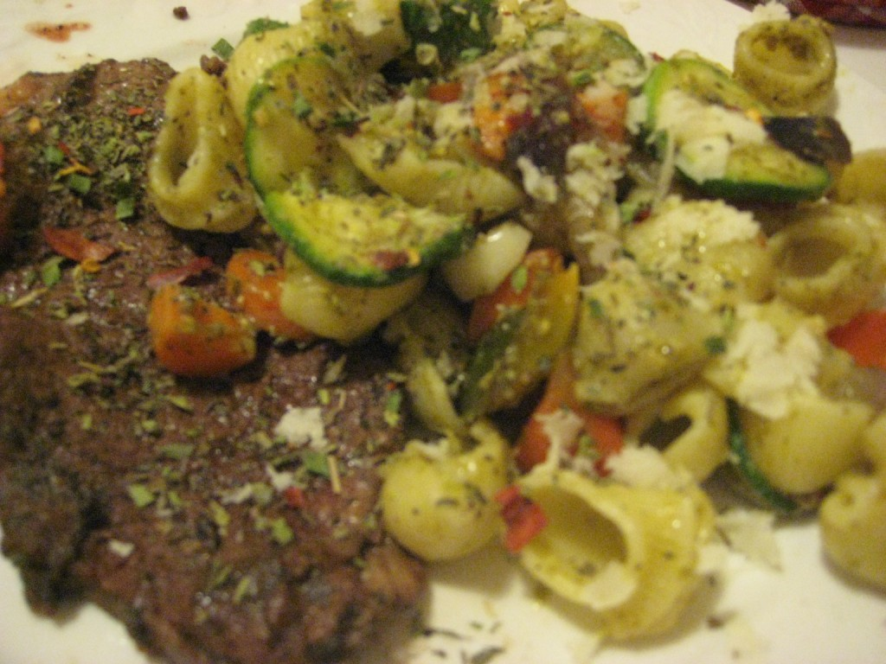

Rome pulled a close second with its amazing Campo di Fiori, a big market for produce, pasta, spices, and flowers that pops up every morning and disappears by sunset.
While El Mercado Boqueria felt like trespassing on the secret meeting spot of Barcelona’s elite chefs, Campo di Fiori felt much more like your typical farmer’s market. Impressive, but more similar to home. Maybe the allure of the foreign market felt slightly spoiled from the few wandering peddlers hoping to sell their fake Ray Bans, but I still enjoyed myself immensely. All the more so because I had a real kitchen back in our apartment (a refrigerator AND stove) and had planned to cook dinner (and by planned I mean I had written “get whatever looks good” – best way to shop).

As we approached the first thing we noticed was the noise. Whereas the Spanish would largely ignore you or only try to talk you into a smoothie if you were right in front of their stall, the Italians would holler from half way across the market to get your attention. From the left a mouthful of parmesan flew your way guided by a very persistent shopkeeper, but try to turn right and a spoonful of honey and cracker with bruchetta were making equally aggressive maneuvers. I have to say it was not an unpleasant experience as all of the samples were delicious.

Dodging spoonfuls of melon and sips of wine, we decided to do a loop first to see how the stalls’ produce and their prices compared. Briefly forgetting that the prices were in kilos, not pounds, I momentarily panicked at the expense. However, at my first purchase I realized I had nothing to worry about as I picked up a fresh zucchini; two onions; a big, multicolored sweet bell pepper; one carrot; a clove of garlic and 3 juicy peaches for 1.60 Euros.

Evan returned victorious from his market encounter with a beautiful hunk of aged parmesan cheese carefully wrapped in several types of paper. It had the perfect texture with a body just tough enough to yield tiny flakes of soft parmesan to the pressure of a sharp knife. It was so good that after we had sprinkled about half of it on our dinner later that night, we took to breaking off pieces for midday snacks.

Having determined before we ever left the United States that the majority of our diet in Italy would consist of olives, we were anxious to find an authentic Italian stash (and slightly concerned that we had set our hopes too high). Luckily for us we found huge vats of olives tucked in the corner of the market, in every type and flavor combination. Selecting fat, whole green olives from our wide selection, we immediately popped a few in our mouths. The depth of flavor, juiciness and sheer amount of meat that these olives had was amazing. I am a big fan of olives at home, but I had never tried olives that were even half as good as these. If there was such thing as “fresh” olives, these would have been picked an hour earlier off the pickling tree. At that moment, I’m sorry to say that Evan and I turned the dark road to being olive-addicts. With all the willpower we could muster, we closed the bag and continued in search of some pasta and spices.

The one thing that the Campo di Fiori could lord over the Boqueria Market was its abundance of fresh pastas. You could find just about any type of pasta you desired here: wheat, corn, flour; thin, wide, stuffed, shaped, long, short; red, green, natural, or any color in between. And they have a pasta for every whim and hobby. With a little searching, we even found bicycle shaped pasta for the cyclist friend (or father).

The array of spices was also impressive. Each stall had 30-40 different gallon+ bags spilling over with different mixes of herbs promising the most delectable pasta or magical lasagna with just a sprinkle. Deciding to get an oregano mix, we realized that “sprinkling of herbs” means two heaping spoonfuls and the shopkeeper stared at us in disbelief when we only wanted a few tablespoons. I guess Italians like their spices! We were also admonished several times for not noting (in writing) that the herbs should be placed on the pasta AFTER it has been cooked. He would not let us go until he had repeated the warning at least four times. His perseverance made me think that should the slightest bit of heat touch the oregano, we might unleash all the evil spirits into the world. Needless to say, we were very careful about how we used our spice mix that evening.

Now having collected our spices, parmesan, vegetables, pasta, and some fresh pesto (and happily snacking on olives), we headed in search of our meat. We found a butcher shop just around the corner from the market, and, coming from a die hard Pollan fan, it was quite impressive.
After studying the history of the food industry, perusing Fast Food Nation-esq commentaries, and rereading my favorite Pollan books, I have developed a pretty negative opinion of general meat industry policies. I’m no vegetarian (who could live in Texas and not enjoy venison tamales??), but I certainly recognize the issues the industry faces, and am especially concerned with safety and health issues for the employees and consumers. Most of those who have seen modern processing plants agree that a job as a butcher is one of the most dangerous and unsatisfactory jobs in the US, yet right in the middle of Rome was a true butcher (not the man behind the counter at Kroger).
Though I won’t post the pictures in case anyone is uncomfortable with using animals as food, I actually felt more connected to the animal to see it divided by skilled craftsman. They seemed to respect its purpose far more than a nameless conveyor belt and a vacuum sealed packaging plant could. A father and son worked side by side wielding sharp, massive knives and laying out freshly carved cuts in the glass cases. Not everything seemed appetizing to my taste buds (brains, anyone?) but everything was used. A proud sign posted in the window reminded the customers that this cow had been born in Italy, raised in Italy, and was now to be used to feed the country.

A world away (literally) from sealed and guarded feed lots and meat processing plants, it was refreshing to know that somehow this shop had not been swept up by the industry we see in the US today. I’m all for efficiency and outputs, but somehow food doesn’t seem to work as well as cars and shipping lines.
Charged up from my ideological rant (don’t worry, Evan had to listen to my entire bit on the way home too), we headed back to the apartment to lay out our bounty on the table like proud warriors returned from the hunt.

That evening, we went to work: myself taking the role of head sous chef and vegetable washer/dicer extraordinaire and Evan as head saute-r and noodle taster. Throwing in some fresh garlic, olive oil, and onions we browned our vegetables a bit before tossing them in with our hot, drained pasta and adding in our peppered steaks to the pan.

Setting our oh-so-fancy cracked linoleum table and barstool-ish chairs, we poured our yummy Italian wine, grated the cheese, and added the herb mix.

We settled down to one delicious meal (and one of our least expensive ones too).

With a huge pot of leftovers, we fed our friends who returned an hour later from a big day at Pompeii.